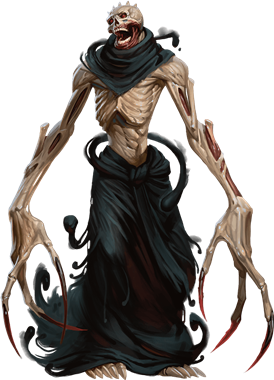

Boneclaw
A wizard who tries to become a lich but fails might become a boneclaw instead. These hideous, cackling monsters share a few of liches' attributes, but while liches are immortal masters of the arcane, boneclaws are thralls to evil, hatred, and pain.

The most important part of the transformation ritual occurs when the soul of the aspiring lich migrates to a prepared phylactery. If the wizard is too physically or magically weak to compel the soul into its new home, the soul instead seeks out a master--a person within a few miles who has a hate-filled heart. The soul bonds to that person and becomes enslaved to its new master's wishes. The boneclaw forms near its master, sometimes appearing before that individual to receive orders and other times simply seeking to fulfill its master's desires.
A boneclaw can serve only an evil creature. If its master finds redemption or sincerely turns away from the path of evil, the boneclaw is destroyed. Otherwise, a boneclaw can't be destroyed while its master lives. No matter what happens to the boneclaw's body, it re-forms within hours.
In service to its master, a boneclaw delights in causing horrific pain. It lurks like a spider in shadowy recesses, waiting for victims to approach within reach of its long, bony limbs. Once speared, a creature is pulled into the darkness to be sliced apart.
Environment
Arctic, Desert, Urban
Boneclaw
Large Undead, Typically Chaotic Evil
- Armor Class 16 (natural armor)
- Hit Points 150 (20d10 + 40)
- Speed 40 ft.
STR DEX CON INT WIS CHA 19 (+4) 16 (+3) 15 (+2) 13 (+1) 15 (+2) 9 (-1)
- Proficiency Bonus +4
- Saving Throws Dex +7,Con +6,Wis +6
- Damage Vulnerabilities
- Damage Resistances cold,necrotic
- Damage Immunities
- Condition Immunities charmed,exhaustion,frightened,paralyzed,poisoned
- Skills Perception +6,Stealth +7
- Senses darkvision 60 ft.,passive Perception 16
- Languages Common plus one language spoken by its master
- Challenge 12
Rejuvenation. While its master lives, a destroyed boneclaw gains a new body in 1d10 hours, with all its hit points. The new body appears within 1 mile of the boneclaw's master.
Unusual Nature. The boneclaw doesn't require air, food, drink, or sleep.
Actions
Multiattack. The boneclaw makes two Piercing Claw attacks.
Piercing Claw. Melee Weapon Attack: +8 to hit, reach 15 ft., one target. Hit: 20 (3d10 + 4) piercing damage plus 11 (2d10) necrotic damage. If the target is a creature, the boneclaw can pull the target up to 10 feet toward itself, and the target is grappled (escape DC 14). The boneclaw has two claws. While a claw grapples a target, the claw can attack only that target.
Shadow Jump (Recharge 5�6). If the boneclaw is in dim light or darkness, each creature of the boneclaw's choice within 15 feet of it must succeed on a DC 14 Constitution saving throw or take 34 (5d12 + 2) necrotic damage.
The boneclaw then teleports up to 60 feet to an unoccupied space it can see. It can bring one creature it's grappling, teleporting that creature to an unoccupied space it can see within 5 feet of its destination. The destination spaces of this teleportation must be in dim light or darkness.
Bonus Actions
Shadow Stealth. While in dim light or darkness, the boneclaw takes the Hide action.
Reactions
Deadly Reach. In response to a creature entering a space within 15 feet of it, the boneclaw makes one Piercing Claw attack against that creature.